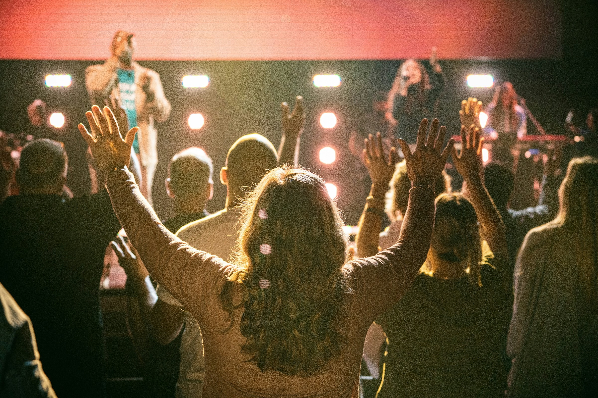

MESSAGES FROM JCAC BARRIE
Our Sermons
Biblical teaching to encourage your faith and help you grow in the knowledge of God.
Listen & Grow
Our Latest Sermons

The Birth of Christ Church At Pentecost
Listen to the sermonWorship With Us
Service Times
Join us in person or online.
Be part of a community growing together in faith.